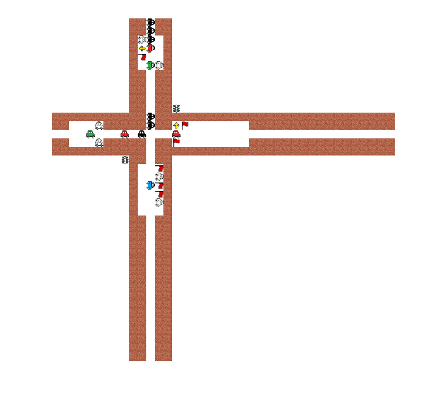

clear;
clc;
new_car_prob = 0.7;
dec_prob = 0.25;
first_park = 5;
last_park = 20;
chance_of_not_having_flag = 0.15;
max_parked = 5;
cars1 = 6;
cars2 = 6;
intersection = [14 12];
max_red = 6;
thr_press = 5;
top_is_red = 1;
left_is_red = 0;
count_red_left = 0;
count_red_top = 0;
full_road = zeros(40,40);
[iter,~] = size(full_road);
full_road(:,:) = -1;
hor_lane = -ones(1,40);
vert_lane = -ones(1,40);
[d,c] = size(hor_lane);
index_lane1 = randsample(30,cars1)';
index_lane2 = randsample(30,cars2)';
hor_lane(1,index_lane1) = randi([0 5],1,cars1);
vert_lane(1,index_lane2) = randi([0 5],1,cars2);
hor_par_slots = zeros(2,c);
hor_steps_parked = zeros(2,c);
hor_par_slots(1:2,:) = -2;
hor_par_slots(1,3:first_park+1) = -1;
hor_par_slots(1,intersection(2)+3:last_park+3) = -1;
hor_par_slots(2,3:first_park+1) = -1;
hor_par_slots(2,intersection(2)+3:last_park+3) = -1;
hor_lane(2,:) = hor_par_slots(1,:);
hor_lane(3,:) = hor_par_slots(2,:);
hor_park_signals = zeros(d,c);
hor_park_flags = zeros(2,c);
vert_par_slots = zeros(2,c);
vert_steps_parked = zeros(2,c);
vert_par_slots(1:2,:) = -2;
vert_par_slots(1,3:first_park+1) = -1;
vert_par_slots(1,intersection(1)+4:last_park+3) = -1;
vert_par_slots(2,3:first_park+1) = -1;
vert_par_slots(2,intersection(1)+4:last_park+3) = -1;
vert_lane(2,:) = vert_par_slots(1,:);
vert_lane(3,:) = vert_par_slots(2,:);
vert_park_signals = zeros(d,c);
vert_park_flags = zeros(2,c);
hor_park_signals(1,index_lane1) = (rand(1,cars1)/2)-0.2;
vert_park_signals(1,index_lane2) = (rand(1,cars1)/2)-0.2;
full_road(intersection(1)-2,1:intersection(2)-2) = -2;
full_road(intersection(1)-2,intersection(2)+2:end) = -2;
full_road(1:intersection(1)-2,intersection(2)-2) = -2;
full_road(1:intersection(1)-2,intersection(2)+2) = -2;
full_road(intersection(1)+2,1:intersection(2)-2) = -2;
full_road(intersection(1)+2,intersection(2)+2:end) = -2;
full_road(intersection(1)+2:end,intersection(2)-2) = -2;
full_road(intersection(1)+2:end,intersection(2)+2) = -2;
full_road(intersection(1)+3,intersection(2)-3) = 10;
full_road(intersection(1)-3,intersection(2)+3) = 11;
full_road(intersection(1)-1,:) = hor_lane(3,:);
full_road(intersection(1),:) = hor_lane(1,:);
full_road(intersection(1)+1,:) = hor_lane(2,:);
full_road(:,intersection(2)+1) = vert_lane(3,:)';
full_road(:,intersection(2)) = vert_lane(1,:)';
full_road(:,intersection(2)-1) = vert_lane(2,:)';
full_road(intersection(1),intersection(2)-1) = hor_lane(1,intersection(2)-1);
full_road(intersection(1),intersection(2)+1) = hor_lane(1,intersection(2)+1);
draw(full_road,intersection,1);
if (vert_lane(1,intersection(1))~=-1)
vert_lane(1,intersection(1)) = 6;
vert_park_signals = 0;
else
vert_lane(1,intersection(1)) = 6;
end
for e=2:1:16
for roads=1:2
if (roads == 1)
[hor_lane,hor_park_signals,hor_park_flags,hor_change_signals] = move(hor_lane,new_car_prob,hor_park_signals,hor_park_flags,dec_prob);
elseif (roads == 2)
[vert_lane,vert_park_signals,vert_park_flags,vert_change_signals] = move(vert_lane,new_car_prob,vert_park_signals,vert_park_flags,dec_prob);
end
end
if(left_is_red && vert_lane(1,intersection(1)+1)==-1)
vert_lane(1,intersection(1)+1) = vert_lane(1,intersection(1));
vert_lane(1,intersection(1)) = -1;
vert_park_signals(1,intersection(1)+1) = vert_park_signals(1,intersection(1));
vert_park_signals(1,intersection(1)) = 0;
vert_park_flags(find(vert_park_flags==intersection(1))) = intersection(1)+1;
end
if(top_is_red && hor_lane(1,intersection(2)+1)==-1)
hor_lane(1,intersection(2)+1) = hor_lane(1,intersection(2));
hor_lane(1,intersection(2)) = -1;
hor_park_signals(1,intersection(2)+1) = hor_park_signals(1,intersection(2));
hor_park_signals(1,intersection(2)) = 0;
hor_park_flags(find(hor_park_flags==intersection(2))) = intersection(2)+1;
end
for roads=1:2
if (roads == 1)
[hor_lane,hor_temp,hor_park_flags,hor_steps_parked,hor_park_signals] = parking(hor_lane,hor_park_signals,hor_change_signals,hor_park_flags,hor_steps_parked,last_park,e);
elseif (roads == 2)
[vert_lane,vert_temp,vert_park_flags,vert_steps_parked,vert_park_signals] = parking(vert_lane,vert_park_signals,vert_change_signals,vert_park_flags,vert_steps_parked,last_park,e);
end
end
if(top_is_red)
count_red_top = count_red_top+1;
full_road(:,intersection(2)+1) = vert_temp(3,:)';
full_road(:,intersection(2)) = vert_temp(1,:)';
full_road(:,intersection(2)-1) = vert_temp(2,:)';
full_road(intersection(1)-1,:) = hor_temp(3,:);
full_road(intersection(1),:) = hor_temp(1,:);
full_road(intersection(1)+1,:) = hor_temp(2,:);
full_road(intersection(1)-1,intersection(2)) = vert_temp(1,intersection(1)-1);
full_road(intersection(1)+1,intersection(2)) = vert_temp(1,intersection(1)+1);
elseif(left_is_red)
full_road(intersection(1)-1,:) = hor_temp(3,:);
full_road(intersection(1),:) = hor_temp(1,:);
full_road(intersection(1)+1,:) = hor_temp(2,:);
full_road(:,intersection(2)+1) = vert_temp(3,:)';
full_road(:,intersection(2)) = vert_temp(1,:)';
full_road(:,intersection(2)-1) = vert_temp(2,:)';
full_road(intersection(1),intersection(2)-1) = hor_temp(1,intersection(2)-1);
full_road(intersection(1),intersection(2)+1) = hor_temp(1,intersection(2)+1);
count_red_left = count_red_left+1;
end
draw(full_road,intersection,e);
[hor_lane,vert_lane,left_is_red,top_is_red,count_red_left,count_red_top] = change_traffic_light(vert_lane,hor_lane,max_red,thr_press,count_red_left,count_red_top,intersection);
if top_is_red==1, full_road(intersection(1)-3,intersection(2)+3) = 10; else, full_road(intersection(1)-3,intersection(2)+3) = 11; end
if left_is_red==1, full_road(intersection(1)+3,intersection(2)-3) = 10; else, full_road(intersection(1)+3,intersection(2)-3) = 11; end
end
Warning: Image is too big to fit on screen; displaying at 50%
Warning: Image is too big to fit on screen; displaying at 50%
Warning: Image is too big to fit on screen; displaying at 50%
Warning: Image is too big to fit on screen; displaying at 50%
Warning: Image is too big to fit on screen; displaying at 50%
Warning: Image is too big to fit on screen; displaying at 50%
Warning: Image is too big to fit on screen; displaying at 50%
Warning: Image is too big to fit on screen; displaying at 50%
Warning: Image is too big to fit on screen; displaying at 50%
Warning: Image is too big to fit on screen; displaying at 50%
Warning: Image is too big to fit on screen; displaying at 50%
Warning: Image is too big to fit on screen; displaying at 50%
Warning: Image is too big to fit on screen; displaying at 50%
Warning: Image is too big to fit on screen; displaying at 50%
Warning: Image is too big to fit on screen; displaying at 50%
Warning: Image is too big to fit on screen; displaying at 50%
